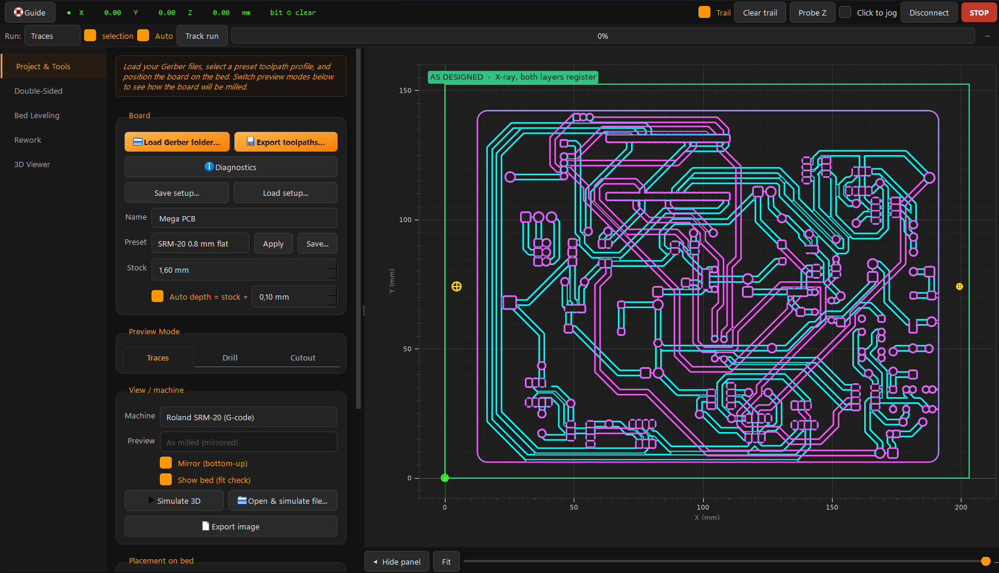

Getting started
Install, take the tour, learn the window.
Install
- Download SRM-CAM-Setup.exe — no Python needed.
- Run the installer
Creates the Start-menu entry and
Documents\SRM-CAM\workspace folders. - Launch A demo board loads and the guided tour starts. Replay it anytime with Guide, or Help → Replay the guided tour. F1 opens this guide, and Help → Check for updates… asks GitHub whether a newer release exists — the app also checks quietly at launch and speaks only when there is one.
From source:
pip install -e ".[gui]"
python -m gerber2rmlInstall the new setup over the old one. Sessions, presets, and probe CSVs survive.
Workspace folders
| Folder | Contents |
|---|---|
Documents\SRM-CAM\sessions | Saved setups (Save setup...) |
Documents\SRM-CAM\exports | Exported .nc / .rml + runplan |
Documents\SRM-CAM\photos | Board photos for the overlay |
The main window

- Sidebar — the run plan. In Novice (the default): 1 · Set up board → 2 · Level the bed → 3 · Drill → 4 · Traces → 5 · Cut out → 6 · Check in 3D. In Professional: 1 · Setup board → 8 · Top traces, plus Rework and 3D viewer. Click any step, nothing is locked — it is a map, not a gate.
- Preview — toolpaths on the bed. Drag to place the board, scrub the slider to see cut order, Fit to re-center. Click-to-jog when connected.
- Machine dock (Professional) — Connect + port, live DRO, bit ○ touch indicator, Z ▲/▼ + step, Probe Z, Spindle, Pause, Resume, a live machine-status strip, red STOP, and the Run: progress row. Click-to-jog, tool trail, align overlay, Zero Z on machine, streaming and the machine test are on the Machine menu — see Machine control.
- Status chips — board · mesh · fit · photo · boxes · link light up as your setup completes.
Novice & Professional
SRM-CAM has two UI modes. Novice is the default on a fresh install, because the person who has never opened the app before is exactly the person the default is for. Switch from the Mode menu.
Novice is a strict subset, not a separate program: same widgets, same handlers, same exports. What you produce in Novice is byte-identical to what the same settings produce in Professional.
| Novice keeps | Novice puts away |
|---|---|
| Load, drill, traces, cut out, export | Job parameters — feeds, depths, offsets, stepover, V-bit geometry (the preset sets these) |
| One-button bed leveling | The bed-leveling workbench — grid size, retouch interval, height-map import/export |
| Corner = tool | Double-sided milling — registration, flip + align, top traces |
| The screw fixture | Rework — boxing spots to re-cut |
| Diagnostics and the Guide | The machine dock and menu — live DRO, jog, streaming, the machine test |
| Output format, mirroring, preview frame, the feed test card, saving presets |
Controls are hidden, not disabled — a greyed-out control still invites clicking and still has to be explained; a hidden one costs a beginner nothing. Mode → What's hidden in Novice? lists all of it in the app, so nobody has to guess whether a feature is gone or just tucked away.
Switching is a menu item, not a password. A lab that wants it fixed can set the SRM_CAM_MODE environment variable to novice or pro — machine-wide, or in the shortcut that launches the app. That overrides the stored preference and greys out the menu.
The machine dock is hidden in Novice, and STOP is part of it — but Level the bed still drives the machine. If a guided levelling run has to be stopped in Novice, use the machine's own front panel.
Files from KiCad
- Plot Gerbers File → Fabrication Outputs → Gerbers — at least B.Cu + Edge.Cuts (+ F.Cu for double-sided).
- Drill files Same dialog → Generate Drill Files (Excellon). Everything in one folder.
- Load Load Gerber folder... picks up all layers + drills automatically.
Load examples/calibration — a bundled 40×30 mm test board that exercises every operation.
Sessions
Save setup... stores everything — board, placement, all settings, height map, rework boxes, photo — in one file. Load setup... restores it exactly, even after an update.
A probed height map is real machine time. Save the session right after probing.